18 Differences amongst the Palmer penguins
“One can’t be angry when one looks at a penguin.”
Background The Long Term Ecological Research Network (LTER) (National Science Foundation (2022)) carries out research at Palmer station, Antarctica. Their work includes studying different species of penguins on islands in the Palmer Archipelago.
Questions How do the species differ? How do the penguin populations on the three islands studied differ?
Sources Horst et al. (2020)
Structure One raw dataset of 344 penguins with 17 variables and one cleaned dataset with 8 variables.
18.1 Getting an overview of the penguin data
A good example of the LTER research can be found in Gorman et al. (2014). Some of the data have been made available in the palmerpenguins package, primarily size measurements and isotopic signature information for three species of penguin: Adélie, Chinstrap, and Gentoo. Colour information is not included, but Gentoo penguins have a distinctive orange bill and white marking above the eyes, while Chinstrap penguins have a narrow black chinstrap. Attractive drawings of the three species are shown on the palmerpenguins package webpage.
The Palmer Archipelago lies to the West of the Antarctic Peninsula, where warming linked to climate change has occurred very fast. According to Fountain (2022) this is bad for Adélie penguins that do better to the East in the Weddell Sea where it is still cold. Gentoo penguins are not so affected.
Figure 18.1 shows four plots of the dataset. There are barcharts for the three species and the three islands, a histogram of penguin body mass, and a scatterplot of flipper length against body mass.
Code
p2 <- penguins
p2 <- p2 %>% mutate(species=fct_recode(species, Adélie="Adelie"))
g1 <- ggplot(p2, aes(species)) + geom_bar(fill="grey70", width=0.75) + ylab(NULL) + ylim(0,200)
g2 <- ggplot(p2, aes(island)) + geom_bar(fill="grey70", width=0.75) + ylab(NULL) + ylim(0,200)
g3 <- ggplot(p2, aes(body_mass_g)) + geom_histogram(boundary=0, binwidth=250, fill="grey70") + xlim(2500, 6500) + ylab(NULL)
g4 <- ggplot(p2, aes(body_mass_g, flipper_length_mm)) + geom_point(colour="grey70") + xlim(2500, 6500)
(g1/g2|g3/g4) + plot_layout(widths = c(2,3))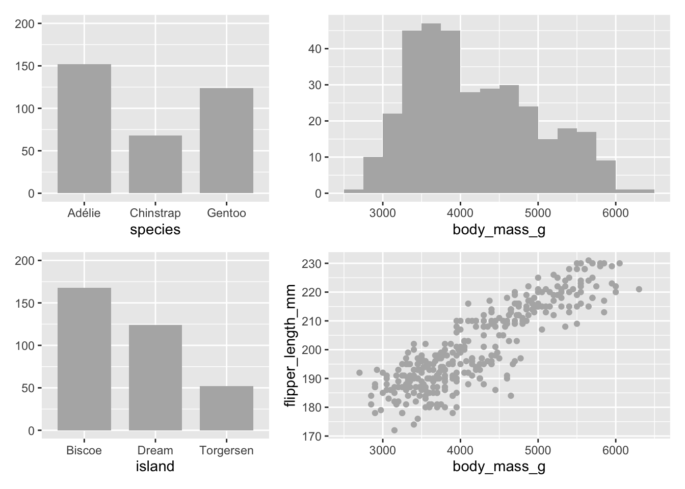
Figure 18.1: Four plots of the Palmer penguin dataset
There are fewer Chinstrap penguins and fewer penguins from Torgersen Island. The distribution of body mass may have that skewed shape because it is a mixture of the body mass distributions of three separate species. Flipper length and body mass are highly positively correlated.
Different subsets can be selected and highlighted to look for patterns. Figures 18.2 and 18.3 show examples of selecting a species or an island across these plots. Gentoo penguins were only sampled on Biscoe Island, and they are generally heavier with longer flippers than the other two species. Dream Island has all the Chinstrap penguins and some Adélie penguins. The penguins on Dream Island have smaller body mass and flipper length.
The penguins in this dataset were nesting pairs that had at least one egg. The sampling procedure is described in Gorman et al. (2014). Detailed information on estimated total penguin numbers at Antarctic sites over the years is available on the MAPPPD website described in Humphries et al. (2017).
Code
p2g <- p2 %>% filter(species=="Gentoo")
blueGentoo <- colorblind_pal()(3)[3]
g1x <- g1 + geom_bar(data=p2g, fill=blueGentoo, width=0.75)
g2x <- g2 + geom_bar(data=p2g, fill=blueGentoo, width=0.75)
g3x <- g3 + geom_histogram(data=p2g, boundary=0, binwidth=250, fill=blueGentoo)
g4x <- g4 + geom_point(data=p2g, colour=blueGentoo)
gu1 <- (g1x/g2x|g3x/g4x)
palens1X <- gu1 + plot_layout(widths = c(2,3))
palens1X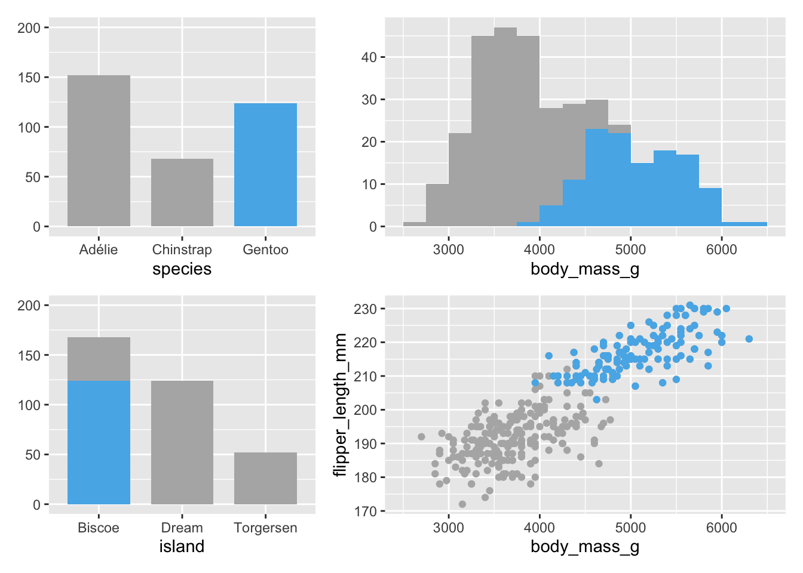
Figure 18.2: Gentoo penguins highlighted in all plots
Code
p2d <- p2 %>% filter(island=="Dream")
g1y <- g1 + geom_bar(data=p2d, fill="red", width=0.75)
g2y <- g2 + geom_bar(data=p2d, fill="red", width=0.75)
g3y <- g3 + geom_histogram(data=p2d, boundary=0, binwidth=250, fill="red")
g4y <- g4 + geom_point(data=p2d, colour="red")
gu2 <- (g1y/g2y|g3y/g4y)
palens2X <- gu2 + plot_layout(widths = c(2,3))
palens2X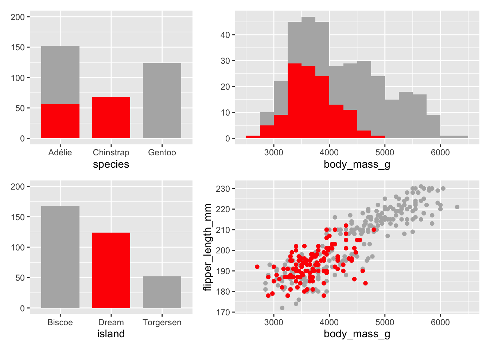
Figure 18.3: Dream Island penguins highlighted in all plots
Groups of cases defined in other ways could also be highlighted. Figure 18.4 highlights the penguins weighing no more than 3 kg. As was already known from Figure 18.2, the penguins are either Adélie or Chinstrap. Interestingly, there are examples of the lightest penguins on all three islands.
Code
p2w <- p2 %>% filter(body_mass_g < 3010)
g1z <- g1 + geom_bar(data=p2w, fill="chocolate3", width=0.75)
g2z <- g2 + geom_bar(data=p2w, fill="chocolate3", width=0.75)
g3z <- g3 + geom_histogram(data=p2w, boundary=0, binwidth=250, fill="chocolate3")
g4z <- g4 + geom_point(data=p2w, colour="chocolate3")
gu3 <- (g1z/g2z|g3z/g4z)
palens3X <- gu3 + plot_layout(widths = c(2,3))
palens3X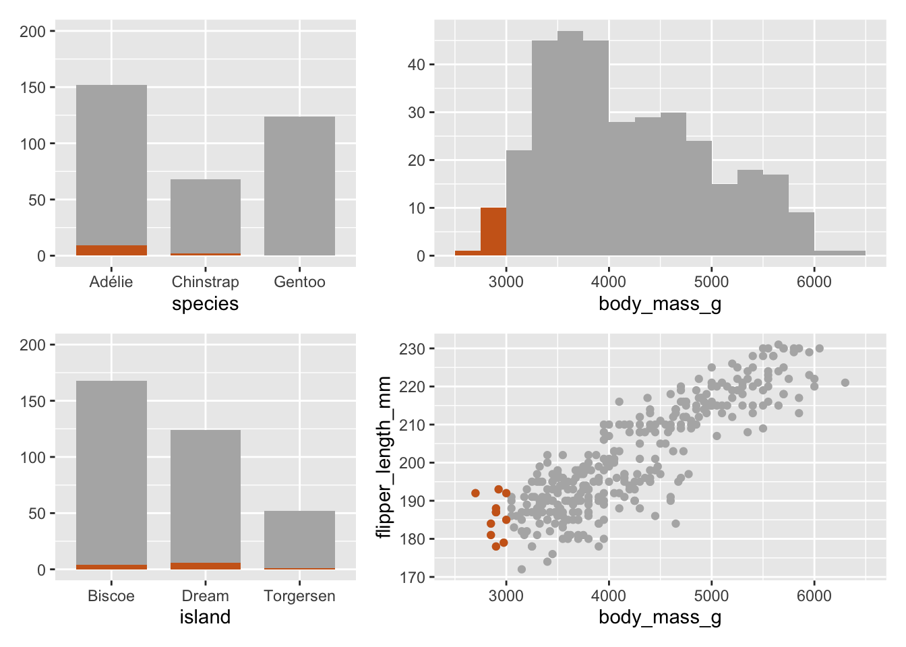
Figure 18.4: Penguins weighing no more than 3 kg highlighted in all plots
At this stage, it could be worth investigating what values these subsets have for other variables. This could be done by drawing the additional plots with the appropriate subset layer. Figure 18.5 shows boxplots for bill length and depth with the lightest penguins drawn in separate boxplots in brown beside boxplots for the rest of the data. With two exceptions, the light penguins have shorter bills than most other penguins. Their bill depths are about the same.
Code
p2 <- p2 %>% mutate(wt=ifelse(body_mass_g < 3010, "light", "others"))
cc <- ggplot(p2 %>% filter(!(is.na(wt)))) + xlab(NULL) + coord_flip() + theme(legend.position="none") + scale_colour_manual(values=c("chocolate3", "grey70"))
c1y <- cc + geom_boxplot(aes(wt, bill_length_mm, colour=wt), varwidth=TRUE)
c2y <- cc + geom_boxplot(aes(wt, bill_depth_mm, colour=wt), varwidth=TRUE)
c1y/c2y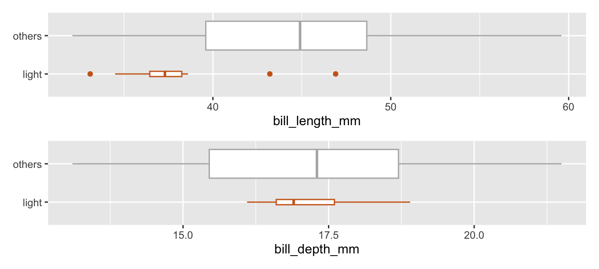
Figure 18.5: Penguins weighing no more than 3 kg plotted beside the rest, comparing bill lengths and bill depths
The boxplots have been drawn with widths proportional to the square roots of the numbers in the groups (331 and 11). The effect may be dramatic, but it emphasises how small the selected group is. By contrast consider boxplots of the same two bill measurements comparing Dream Island penguins to the rest. Bill lengths are about the same, while bill depths are larger.
Code
p2 <- p2 %>% mutate(DreamI=ifelse(island=="Dream", "Dream", "Other"))
dd <- ggplot(p2 %>% filter(!(is.na(wt)))) + xlab(NULL) + coord_flip() + theme(legend.position="none") + scale_colour_manual(values=c("red", "grey70"))
d1y <- dd + geom_boxplot(aes(DreamI, bill_length_mm, colour=DreamI), varwidth=TRUE)
d2y <- dd + geom_boxplot(aes(DreamI, bill_depth_mm, colour=DreamI), varwidth=TRUE)
d1y/d2y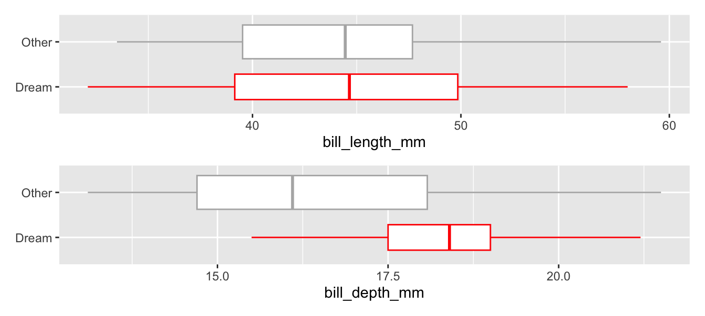
Figure 18.6: Dream Island penguins plotted beside the rest, comparing bill lengths and bill depths
Highlighting like this is a basic tool in interactive graphics where you select cases in one plot and they are then immediately highlighted in all other plots. Static versions, ghostplots, do not offer the same immediacy and flexibility, but can be drawn by creating a subset of just the selected cases. The plots required are drawn with the full dataset, using a muted colouring, and an additional layer is added to each plot using the subset. The selected objects are coloured more strongly, for instance in red or blue.
18.2 Looking at several variables in one plot
Examining all variables together can be helpful in determining which differentiate between the species. Figure 18.7 is a parallel coordinate plot of the data with the cases coloured by species.
Code
PalX <- p2 %>% pcp_select(species:body_mass_g) %>% pcp_scale() %>% pcp_arrange() %>% ggplot(aes_pcp()) + geom_pcp_axes(colour="white") + geom_pcp(aes(colour=species)) + geom_pcp_boxes(fill="white") +xlab(NULL) + ylab(NULL) + theme(axis.text.y=element_blank(), axis.ticks.y=element_blank(), legend.position="none") + geom_pcp_labels(fill="white", alpha=1) + scale_colour_colorblind()
PalX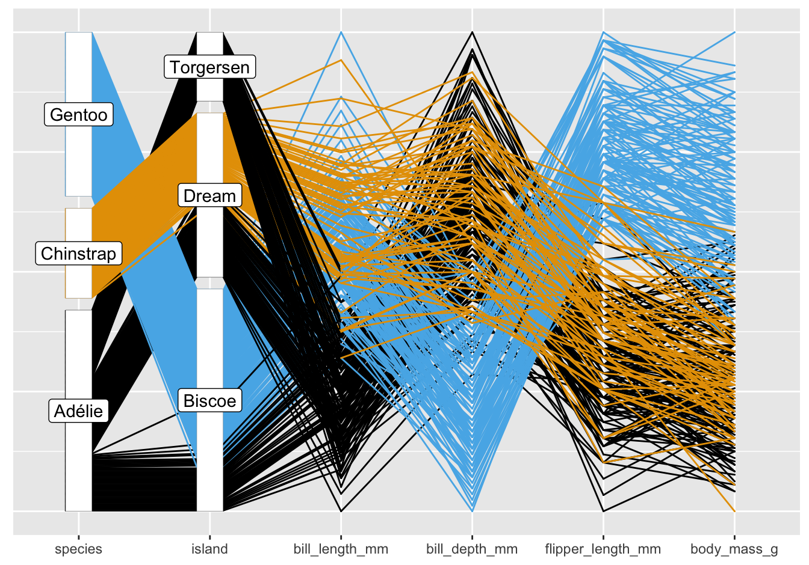
Figure 18.7: Parallel coordinate plot of the Palmer Penguin data
The first two axes show the information already seen in Figures 18.2 and 18.3 that Gentoo penguins are only to be found on Biscoe and Chinstrap penguins only on Dream. Other features can be seen too, such as the different patterns between bill length and bill depth for the species.
Further features may be separated out better in a parallel coordinate plot by reordering categories and variables. Chinstrap are only on Dream Island, so those categories should be at the top or bottom, and Gentoo are only on Biscoe Island, so they should be at the other end. It also seems better to place island before species. Most measurements have higher values for Gentoo penguins, but bill depth has lower values, so it could be reversed to reduce the numbers of line crossings. Finally, bill length has a different pattern to the other measurement variables and so might be moved to the far right. Figure 18.8 shows the data with the species and islands reordered, with bill depth reversed, and variables reordered.
Code
p2 <- p2 %>% mutate(Species=factor(species, levels=c("Chinstrap", "Adélie", "Gentoo")), Island=factor(island, levels=c("Dream", "Torgersen", "Biscoe")), r_bill_depth=25-bill_depth_mm)
colblindP <- c(colorblind_pal()(3)[c(2, 1, 3)])
PalY <- p2 %>% pcp_select(Island, Species, r_bill_depth, flipper_length_mm, body_mass_g, bill_length_mm) %>% pcp_scale() %>% pcp_arrange() %>% ggplot(aes_pcp()) + geom_pcp_axes(colour="white") + geom_pcp(aes(colour=Species)) + geom_pcp_boxes(fill="white") +xlab(NULL) + ylab(NULL) + theme(axis.text.y=element_blank(), axis.ticks.y=element_blank(), legend.position="none") + geom_pcp_labels(fill="white", alpha=1) + scale_colour_manual(values=colblindP)
PalY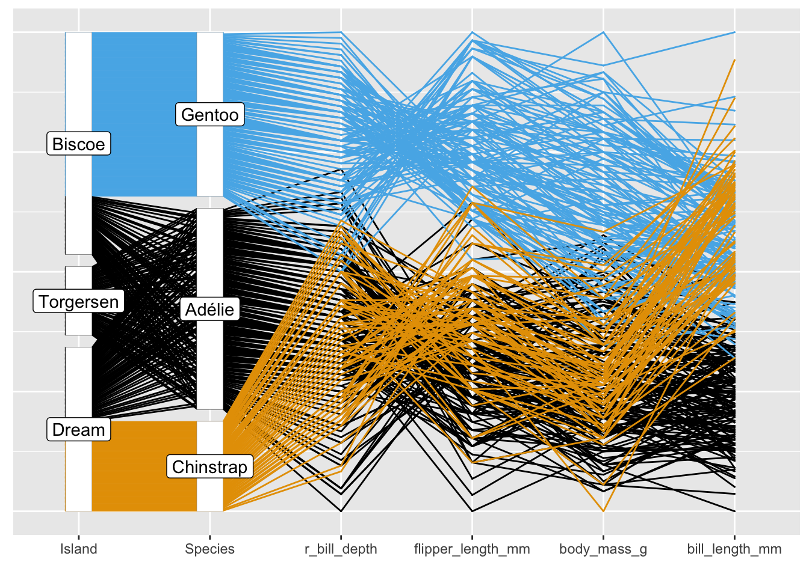
Figure 18.8: Reordered parallel coordinate plot of the Palmer Penguin data
In this display Chinstrap and Adélie penguins have similar measurement distributions, apart from bill length: Chinstrap penguins have longer bills. Gentoo penguins have higher values on several variables, except for bill depth—remember that this variable has been reversed in Figure 18.8. The fact that all blue (Gentoo) crossings between reversed bill depth and flipper length are above all other crossings between the two variables means that together they separate Gentoo from the other species.
There may be a more effective reordering of the categories and variables. Minimising the total number of line crossings could be a goal or, given the aim of distinguishing between the species, minimising the number of line crossings of different species, but how would a search through the myriad options be carried out? There are 6!=720 orderings of the six variables, 3!=6 orderings of the islands, 3!=6 orderings of the species, and \(2^{4}\)=16 ways of mapping the variables (each one can be plotted as is or inverted). Some of these are equivalent (a reverse ordering of the variables will give the same result as an unreversed ordering), but there does not appear to be an obvious search procedure.
Bivariate associations seen in parallel coordinate plots can be examined more closely with scatterplots. Figure 18.9 confirms how bill length and bill depth combined separate the species (left) and how bill depth and flipper length combined separate Adélie penguins from the other two species (right).
Code
p2 <- p2 %>% mutate(SpeciesGCA=factor(species, levels=c("Gentoo", "Chinstrap", "Adélie")))
colblindPgca <- c(colorblind_pal()(3)[c(3, 2, 1)])
pscat1 <- ggplot(p2, aes(bill_depth_mm, bill_length_mm, colour=SpeciesGCA)) + geom_point() + scale_colour_manual(values=colblindPgca) + theme(legend.title=element_blank(), legend.position="bottom")
pscat2 <- ggplot(p2, aes(bill_depth_mm, flipper_length_mm, colour=SpeciesGCA)) + geom_point() + scale_colour_manual(values=colblindPgca) + theme(legend.title=element_blank(), legend.position="bottom")
pscat1 + pscat2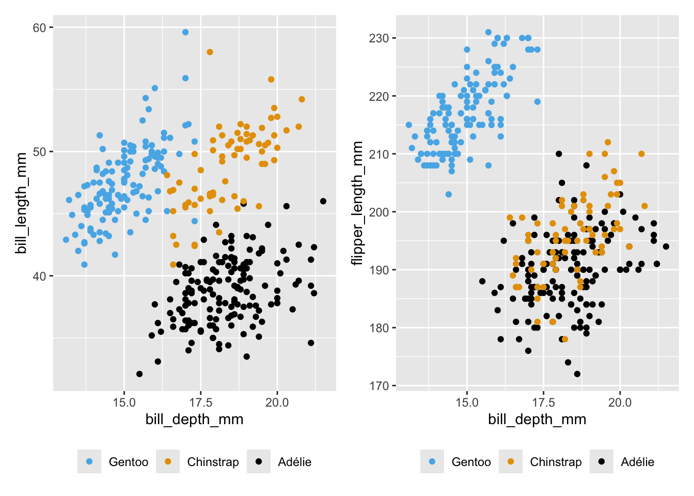
Figure 18.9: Scatterplots of bill depth with bill length and flipper length
Another way of exploring groups is to use facets. Figure 18.10 shows bill lengths and depths for each combination of species and island. To aid comparisons, the plot for all the penguins has been drawn in the background.
Code
ggplot(p2, aes(bill_depth_mm, bill_length_mm)) + geom_point(data=penguins %>% select(-island, -species), colour= alpha("black", 0.05)) + geom_point(aes(colour=Species)) + facet_grid(rows=vars(Species), cols=vars(fct_rev(Island))) + theme(legend.position="none") + scale_colour_manual(values=colblindP)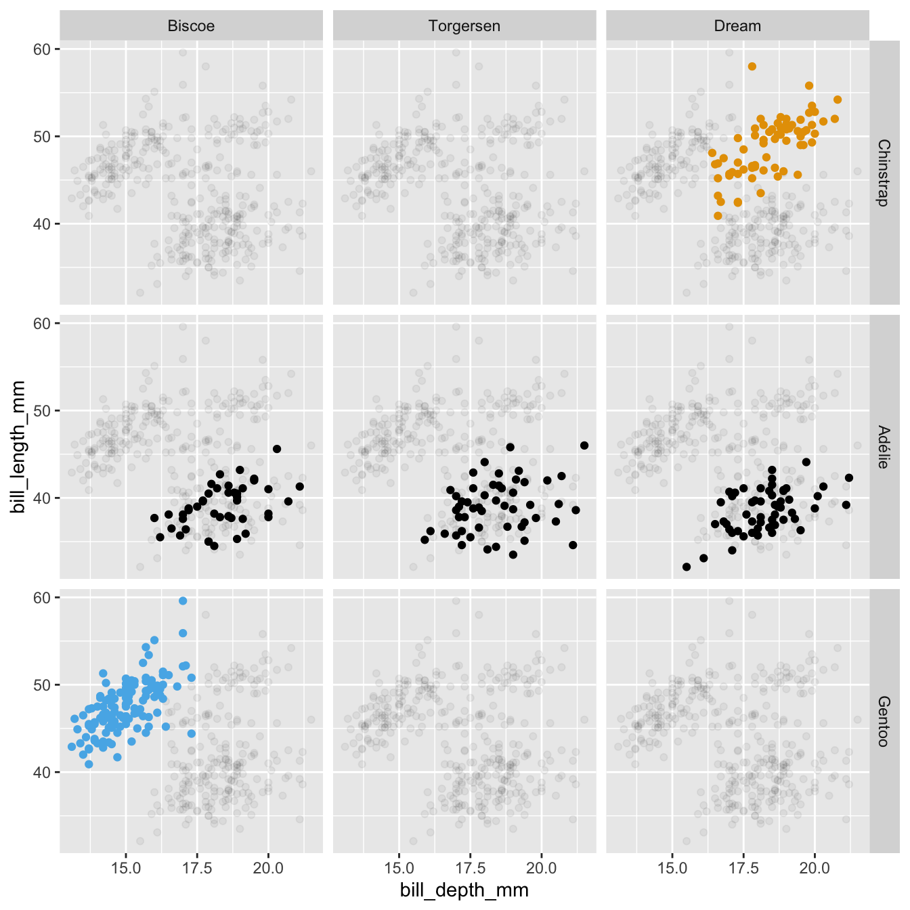
Figure 18.10: Scatterplots of bill lengths and depths of penguins by the three species and three islands
Code
Whichever graphics or tables are drawn to investigate this dataset, it is quickly clear that the Chinstrap penguins are only found on Dream Island and that the Gentoo penguins are only found on Biscoe Island. Fig 18.10 shows that the association between bill length and depth is positive for all species on any island they are found on. It also suggests, if you look at the subplots with no highlighted cases, that the association between bill length and depth for all penguins together is negative. The calculated correlation for the whole dataset is -0.24, while the correlations for the highlighted groups in the individual facets range from 0.25 to 0.65.
18.3 Using raw data to get more information
There is a second dataset with more variables in the palmerpenguins package called penguins_raw. This includes nesting observations and two isotope measurements. It provides enough information to compare the male and female in each nesting pair. The following set of scatterplots plots the four main measurements for the males against those of their female partners. In each plot the horizontal and vertical axes have identical scales.
Code
p1 <- penguins_raw
p1 <- p1 %>% separate(`Individual ID`, c("PairID", "Gender"), sep="A", remove=FALSE)
names(p1)[12:15] <- names(p2)[3:6]
p1$species <- p2$species
p1w <- p1 %>% select(-`Sample Number`, -`Individual ID`, -Gender, -Comments) %>% filter(!is.na(Sex)) %>% pivot_wider(names_from="Sex", values_from=c(bill_length_mm:body_mass_g, `Delta 15 N (o/oo)`, `Delta 13 C (o/oo)`))
sg0 <- ggplot(p1w, aes(colour=species)) + scale_colour_colorblind() + geom_abline(intercept=0, slope=1, colour="green") + ylab(NULL) + xlab(NULL) + theme(plot.title = element_text (vjust = 3), legend.position="none")
sg1 <- sg0 + geom_point(aes(bill_length_mm_FEMALE, bill_length_mm_MALE)) + xlim(30,60) + ylim(30,60) + ggtitle("Bill length (mm)")
sg2 <- sg0 + geom_point(aes(bill_depth_mm_FEMALE, bill_depth_mm_MALE)) + xlim(13,23) + ylim(13,23) + ggtitle("Bill depth (mm)")
sg3 <- sg0 + geom_point(aes(flipper_length_mm_FEMALE, flipper_length_mm_MALE)) + xlim(170,240) + ylim(170,240) + ggtitle("Flipper length (mm)")
sg4 <- sg0 + geom_point(aes(body_mass_g_FEMALE, body_mass_g_MALE)) + xlim(2500,6500) + ylim(2500,6500) + ggtitle("Body mass (g)")
scatRy <- (sg1+sg2)/(sg3+sg4) + plot_layout(guides = 'collect') & theme(legend.position = "bottom", legend.direction = "horizontal", legend.title=element_blank())
scatRy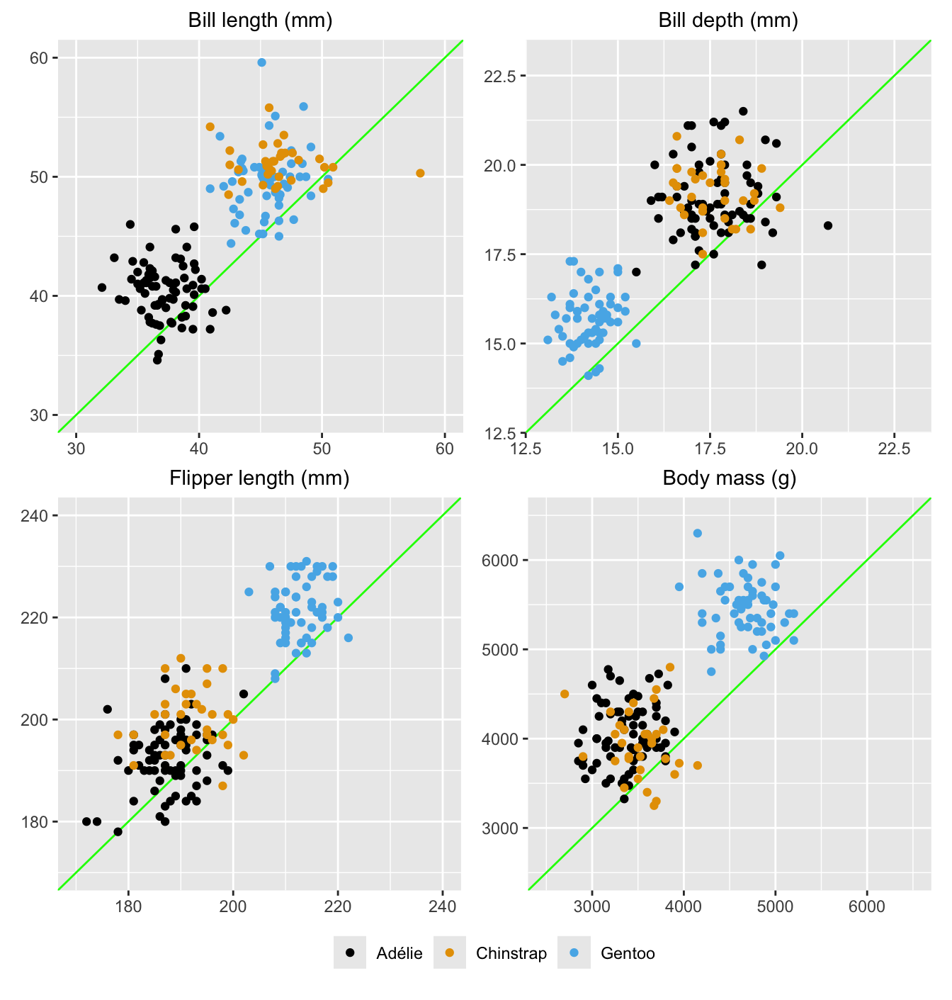
Figure 18.11: Measurements of four variables for the male (vertical axes) and female (horizontal axes) in each pair (green lines mark where values would be equal)
Code
rg1 <- ggplot(p1w, aes(bill_length_mm_FEMALE, bill_length_mm_MALE, colour=species)) + geom_point() + scale_colour_colorblind() + xlim(30,60) + ylim(30,60) + geom_abline(intercept=0, slope=1, colour="green")
rg2 <- ggplot(p1w, aes(bill_depth_mm_FEMALE, bill_depth_mm_MALE, colour=species)) + geom_point() + scale_colour_colorblind() + xlim(13,23) + ylim(13,23) + geom_abline(intercept=0, slope=1, colour="green")
rg3 <- ggplot(p1w, aes(flipper_length_mm_FEMALE, flipper_length_mm_MALE, colour=species)) + geom_point() + scale_colour_colorblind() + xlim(170,240) + ylim(170,240) + geom_abline(intercept=0, slope=1, colour="green")
rg4 <- ggplot(p1w, aes(body_mass_g_FEMALE, body_mass_g_MALE, colour=species)) + geom_point() + scale_colour_colorblind() + xlim(2500,6500) + ylim(2500,6500) + geom_abline(intercept=0, slope=1, colour="green")
scatRyO <- (rg1+rg2)/(rg3+rg4) + plot_layout(guides = 'collect') & theme(legend.position = "bottom", legend.direction = "horizontal", legend.title=element_blank())As expected, the male in each pair is generally bigger than the female. One of the female Chinstrap penguins has a surprisingly long bill, possibly an error. Looking at the points as pairs combining the measurements of the male and the female from one nest, it can be seen that bill-depths, flipper lengths and body masses separate Gentoo pairs from the rest, while bill-lengths separate Adélie pairs from those of the other two species.
Answers Gentoo penguins are heavier with longer flippers and less deep bills and, of the islands studied, are only found on Biscoe Island. Adélie penguins have shorter bills. Chinstrap penguins are only found on Dream Island. Male penguins are usually bigger than their female partners.
Further questions Do the isotope measurements in the raw dataset differ for the species? The study was carried out over three years: Do results differ in any way across the years?
Graphical takeaways
- Selection and highlighting are instructive for studying groups of cases across ensembles of graphics. (Figures 18.2 to 18.4)
- Orderings of many kinds are crucial for getting the most out of parallel coordinate plots. (Figure 18.8)
- If data are paired, plotting the pairs in scatterplots provides more information. (Figure 18.11)